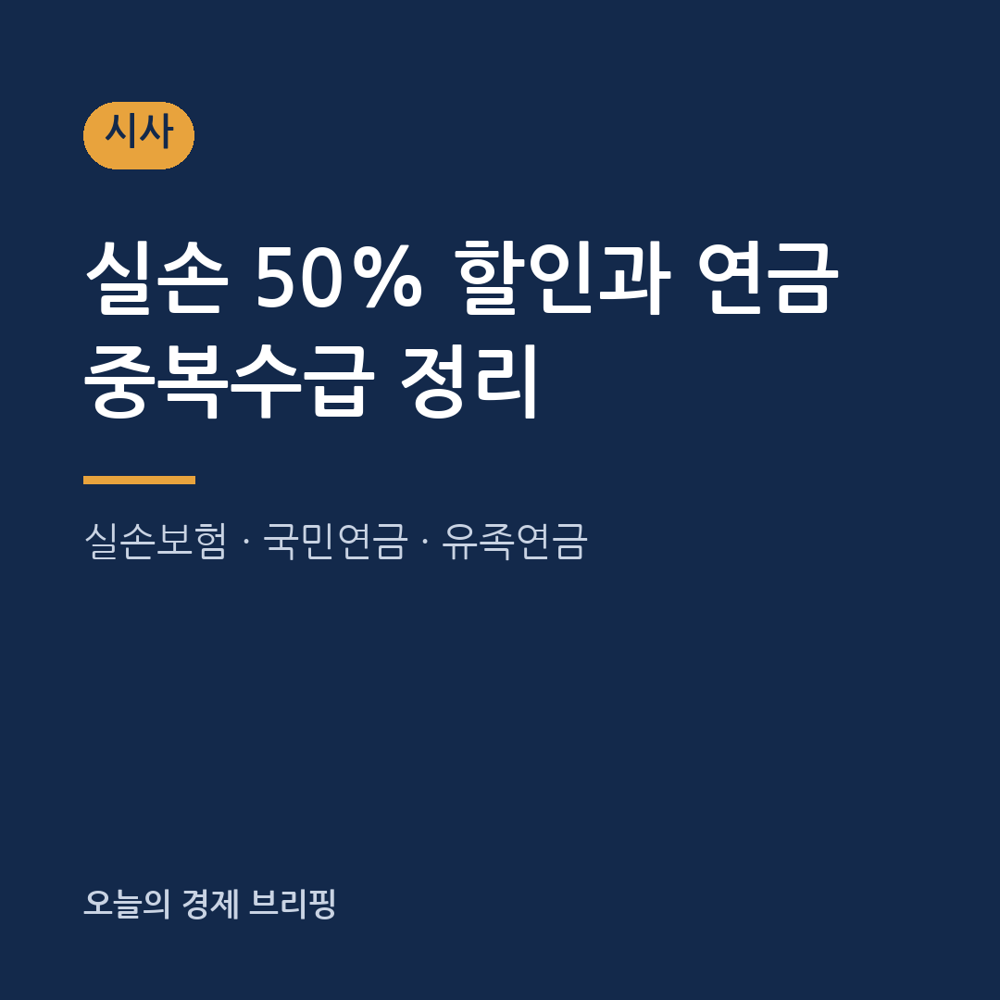

2026-11-23-1232-tistory 발행 키트 · 이 페이지는 검색에 노출되지 않습니다.
제목
카테고리
시사태그
본문 (그림·표 포함)
휴대폰 블로그 앱에서는 그림이 같이 붙지 않을 수 있어요. 그때는 [글자만 복사] 후 아래 이미지를 저장해 [그래프1]·[표1] 자리에 첨부하세요.

핵심 결론부터 정리합니다. 11월 23일부터 5세대 실손보험으로 전환하면 보험료를 3년간 50% 할인받는 제도가 시행되었고, 국민연금에서는 본인 연금과 유족연금을 함께 받는 중복수급자가 20.8만명까지 늘어 선택 기준을 미리 알아 둘 필요가 있습니다.
▶ 배경: 부담이 커진 실손보험료
실손의료보험(진료비 가운데 가입자가 실제로 부담한 금액을 보전하는 민간보험)은 장기간 유지하는 계약이 많아 월 보험료 부담이 누적되는 상품입니다. 이번 할인제도는 이런 부담을 덜어 주기 위한 장치로 소개되었습니다.
▶ 핵심 내용: 3년간 보험료 절반
할인의 골자는 5세대 실손으로 전환한 가입자에게 3년 동안 보험료의 50%를 깎아 주는 것입니다. 시행일은 오늘, 11월 23일입니다.
매일경제 보도에서는 이 할인으로 3년간 550만원을 아낄 수 있다고 제시했습니다. 이 금액은 보도에 나온 예시 기준이며, 개별 계약의 절감액은 가입 조건에 따라 별도로 확인해야 합니다.
실손보험 할인제도 요약
| 구분 | 내용 |
|---|---|
| 언제부터 | 2026년 11월 23일 |
| 누가 | 5세대 실손 전환 가입자 |
| 얼마나 | 보험료 50% 할인 |
| 얼마 동안 | 3년 |
| 어디서 확인 | 가입 보험사 안내 |
출처: 매일경제
▶ 영향과 확인할 점
할인 기간이 3년으로 정해져 있으므로 기간이 끝난 뒤의 보험료 수준까지 함께 비교해야 합니다. 또한 전환 후 보장 범위가 현재 계약과 어떻게 다른지는 이번에 확인된 자료가 없어, 보험사 안내문으로 직접 대조하는 과정이 필요합니다.
▶ 두 번째 이슈: 국민연금 중복수급
국민연금에서는 본인이 가입 기간 동안 보험료를 냈더라도 유족연금(가입자 사망 시 유족에게 지급되는 연금) 수급 자격이 함께 생기는 경우가 있습니다. 이때 두 연금을 모두 전액 받는 것은 아니고 하나를 기준으로 선택하는 구조입니다.
본인 연금을 선택하면 유족연금은 30%만 받습니다. 유족연금을 선택하면 본인 연금은 지급이 정지됩니다. 이런 중복수급권자는 최근 4년 사이 68% 증가해 20.8만명으로 집계되었습니다.
국민연금 중복수급 선택별 결과
| 선택 방식 | 수령 내용 | 본인 연금 상태 |
|---|---|---|
| 본인 연금 선택 | 본인 연금과 유족연금 30% | 지급 |
| 유족연금 선택 | 유족연금 | 지급정지 |
출처: 매일경제
▶ 확인할 점
어느 쪽이 유리한지는 본인 연금액과 유족연금액의 크기에 따라 갈립니다. 이번 자료에는 구체적인 비교 계산이 없으므로, 국민연금공단에 문의해 본인의 예상 수령액을 확인한 뒤 선택하는 것이 안전합니다.
▶ 정리
1. 실손보험 할인제도는 11월 23일부터 시행되었고, 5세대 전환 시 보험료가 3년간 50% 할인됩니다.
2. 할인 종료 이후의 보험료와 보장 내용 변화는 가입한 보험사에서 직접 확인해야 합니다.
3. 국민연금 중복수급자는 본인 연금 선택 시 유족연금 30%, 유족연금 선택 시 본인 연금 지급정지이므로, 수령액을 미리 확인하고 결정해야 합니다.
출처 (본문 맨 아래에 붙여넣기 권장)
- 매일경제, 실손보험 할인제도 시행 관련 기사, https://www.mk.co.kr/news/economy/12215850 - 매일경제, 국민연금 중복수급 관련 기사, https://www.mk.co.kr/news/economy/12215806